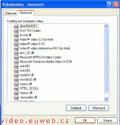

Časté dotazy
Sem bych chtěl psát vaše dotazy. Pokud se mi bude zdát, že se něco objevuje na Poradně příliš často, napíšu to sem.
Pokud se i vy chcete zeptat, neváhejte a využíjte služeb Poradny.
Jak zjistit nainstalované kodeky? • Nehrají mi AVI, co s tím? • Jak převést AVI na DVD • Zvuk 5.1
Jak zjistím nainstalované kodeky?
- Jak mám zjistit nainstalované kodeky?
- Takže: Start - Nastavení - Ovládací panely - Zvuky a zvuková
zařízení. Přepněte se na záložku Hardware, kde je seznam zařízení.
Najděte Videokodeky, dvakrát na ně klikněte, přepně te se na záložku
Vlastosti a máte před sebou všechny vaše videokodeky.

Nehrající AVI
- Mám film v AVI a nehraje mi, co s tím?
- Tohle je záležitost tzv. kodeků, které musíš někde stáhnout, například DivX nebo FFDShow. Běžně stačí DivX, pro zkušenější uživatele (nebo tzv. „hračičky“) doporučuju FFDShow.
Titulky v MPG
- Jak nejrychleji dostat titulky do mpg, abych nemusel znova převádět film, jelikož už mám mpg hotový.Předem dík
- Nevím. Možná MPG soubory podporují titulky jak AVI filmy, pak by to bylo jako v této sekci
Titulky u AVI souborů
- Mám film v AVI a titulky v textovém souboru. Jak je zaptnu?
- Máte tři možnosti:
- Stáhněte si kodek (DivX, XviD (česky)), terý bude dekódovat video, a k němu nějaký „titulkovač“, jako je DivXG400 (jakžtakž návod) nebo VobSub.
- Můžete si stáhnout FFDShow (česky), což je kodek přehrávající snad všechny druhy AVI souborů, umí dokonce i s videem pracovat během přehrávání (odšumovat, zaostřovat...) a přidávat titulky. Doporučuju zkušenějším uživatelům, ale výsledek stojí za to.
- Stáhnout si video přehrávač umožňující otevírání titulků, typicky VPlayer nebo BSPlayer.
Subjektivně pro začátečníky bych to hodnotil v pořadí: trojka nejlepší, potom jednička a dvojka pro zkušenější uživatele.
Převod AVI do DVD
- Prosím o návod nebo popřípadě o info jak se dá a zda se dá převádět avi na dvd formát.
- Jde o to, jestli tam chcete mít titulky nebo ne. A o to, jestli chcete titulky vypínat nebo je mít natvrdo ve filmu.
- AVI na DVD bez titulků vám pevede bez problému Nero Vision Express
- AVI na DVD s titulky, které je možné vypnout
- AVI na DVD s titulky, které není možné dostat z videa
Zvuk 5.1 u DVD
- Při přehrávání DVD filmů mi nefunguje zvuk 5.1
Používám přehrávač Power DVD a Win DVD….volba zvuku 5.1 je aktivní, ale když tuto volbu vyberu, zvuk se vypne. Funguje jen volba „Stereo“, pak zvuk sice hraje ze všech reproduktorů, ale to asi nebude ono…
Zvukovou kartu mám SoundBlaster Live! 5.1, v ovladačích ZK i ve Windows XP mám nastavený reproduktory 5.1. Jako reproduktory používám Genius Home Theathre 5.1
Film, se kterým jsem to zkoušel byl nahraný v režimu 5.1, takže by ten zvuk fungovat měl….
Zkoušel jsem i nastavení AC3 – mám tam vybraný 5.1 a bass redirection….
Promiň, že se na Tebe tak nadrzo obracím, ale zaujaly mě Tvé stránky….děkuju za případnou odpověď
- Nevím, podle mě to může mít víc příčin, zkusil bych jiný film. PowerDVD verze 4.0 určitě funguje na filmu XXX...
Video na PC: Vytvořeno v roce 2005 a víc. Autorem je Jan 'Šlaha' Šlahora. Veškerá práva vyhrazena autorům článků. Pokud není uvedeno jinak, jsem to já.
{kind=link}